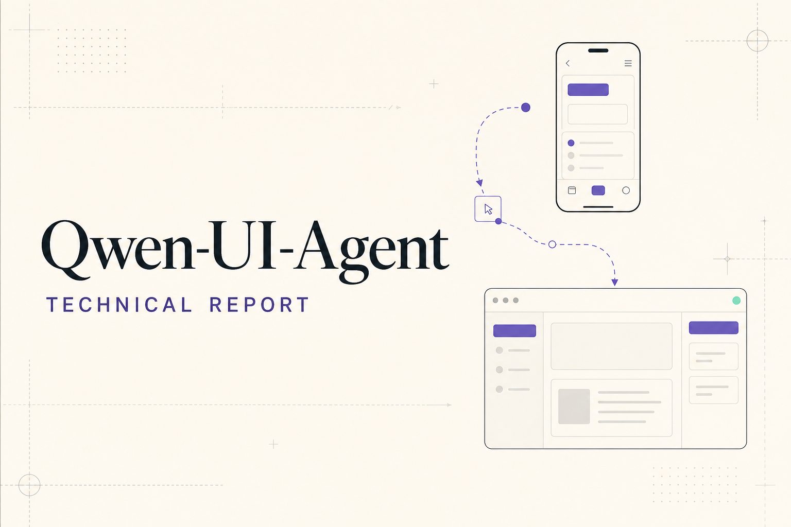
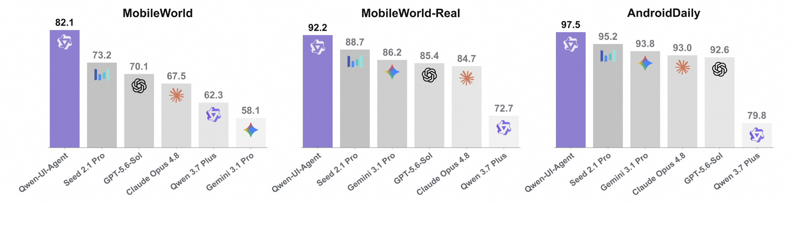
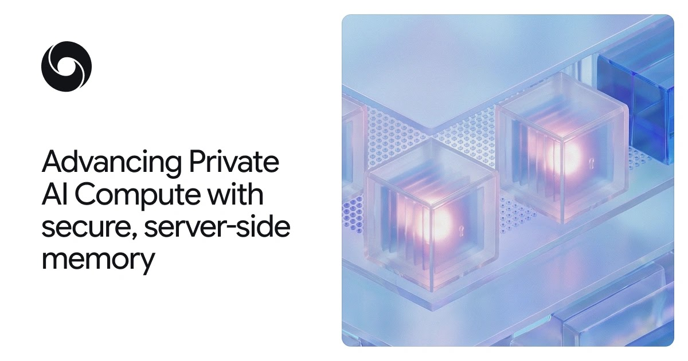
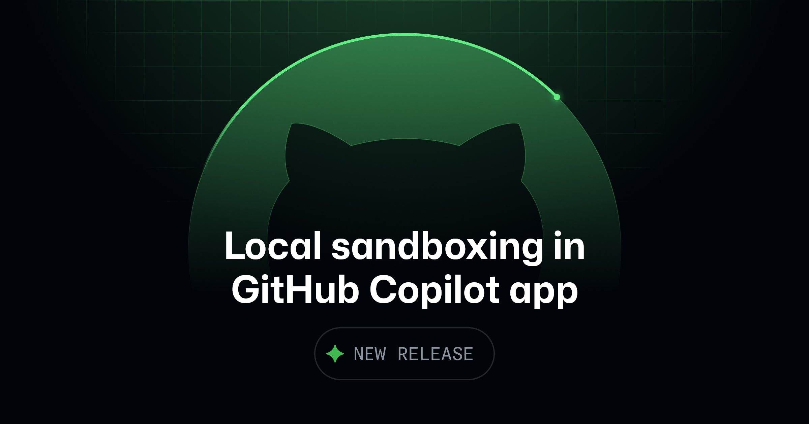

AI Intelligence Daily · 2026-09-24
专栏一｜新闻
1. Cursor 发布 Rollouts + Security Review
事实
Cursor Changelog/Blog 宣布两款「shipping 最后一公里」机器人，Teams/Enterprise 当日可用。Rollouts：挂在每个 PR，写 monitoring plan，按环境对照日志/指标/traces，报告健康/回归/不确定；回归时可通知作者、开 revert PR 或交给 cloud agent——今天不自行 merge/rollback。对接 Origin/GitHub、CD、Datadog 等。Security Review：非 draft PR 上审查可利用漏洞（注入、鉴权绕过、密钥、SSRF、反序列化、CVE 依赖等），给出 severity/attack path/修复建议；风格质量仍归 Bugbot。未来 10 天试用额度（Teams≈50 / Enterprise≈500 changes）。
判断
竞争从「写代码」延伸到「安全地发布并看住生产」。相对 Sep10 Projects，本条补上 merge 之后的自主运维面——对 Work·Agent 引擎的 ship loop / Trust 是路线信号。
2. 阿里通义 Qwen Intelligence / Qwen-UI-Agent / Mobile Planner
事实
官宣 Qwen Intelligence：Mobile Planner（Harness+Memory+Skills+Sub-agent；仓为报告站非权重实现）、Mobile-Use（Qwen-UI-Agent：Mobile/Computer/Browser 跨端 GUI Agent；MobileWorld 82.1 / Real 92.2 等作者环境分）、Mobile Creative。配套 MobilePA-Bench / MobileWorld 等；arXiv 2607.28227。
判断
Personal Agent 产品壳与跨端 GUI Agent、Planner Harness、可核对评测站捆在同一天——Harness/CUA/Skill/Memory 对照即时基线。


3. DeepMind：Private AI Compute 安全服务端持久 Memory
事实
在 stateless Private AI Compute 之上增加持久、跨设备服务端记忆：数据封存在专用加密存储，密钥只在用户设备；经 E2E 通道在云端 secure enclave 短暂解密处理后再加密。配套技术 brief、可公开核验的服务器软件记录与独立审计更新。
判断
把 Personal Agent 长期记忆与云端算力/隐私矛盾写成可审计架构——Memory/Trust/多端 Runtime 路线图级信号。

4. GitHub Copilot app Local sandboxing（公共预览）
事实
按项目配置本地会话的 Filesystem / Network / Credentials；企业策略可更严；OS 无法强制则失败而非无沙箱继续（fail-closed）。默关；不适用 cloud/remote；与 Copilot CLI 分列。
判断
本地 Coding Agent 最小权限做成可运维策略——Runtime/Sandbox/企业策略对照即时信号。

5. Kimi Code Desktop 1.0.3：嵌入服务器任意命令漏洞修复
事实
Changelog 1.0.3：内置浏览器打开本地 HTML、下载控制、斜杠命令提示等；安全项明确修复 malicious web pages run arbitrary commands through the local embedded server。Extension 仍 2.0.17。
判断
Desktop 内置浏览器 + 本地嵌入服务器是典型攻击面；官方点名修复对本地 Runtime 安全基线是硬信号。
6. MiniMax Code CLI npm 0.5.3
事实
npm @minimax-ai/code@0.5.3：Plugin @ 提及保留来源身份、OpenRouter 预设、Skill 目录符号链接等。GH Releases 本轮仍见最高 v0.5.2（tag 0.5.3 404）——以 npm+CHANGELOG 为准。Desktop 仍 0.1.188。
判断
开源 CLI 小步迭代；供应链核验要以 registry 为准。
专栏二｜话题热议
官方 shipping 密集，社交热度滞后
本窗 Cursor Rollouts / Copilot sandbox / Qwen Intelligence 尚未形成 HN 高分主帖；讨论仍更接近前一日双旗舰余波。媒体有 OpenAI agent × 澳卫生相关标题，缺官方一手，不升格新闻。Gemini Connected Apps 与 3.8 TTS 作旁证/近失。
专栏三｜开源雷达
- Tongyi-MAI/MobileWorld ★280；Qwen-Planner-Agent ★40（报告仓）
- minimax-code ★1806（≈+42）；npm 0.5.3
- cua ★26129（≈+141）；google/ax ★9038；ACP ★4313
- claude-code v2.1.281（09-23 19:19Z）小版本
重点事件新进展
- Cursor：Sep10 → Sep23 Rollouts/Security（是）
- MiniMax CLI：0.5.2 → 0.5.3；Desktop 仍 0.1.188
- Kimi Desktop：1.0.2 → 1.0.3；Extension 仍 2.0.17
- Claude Code：2.1.280 → 2.1.281
- 未变：小艺 0.7.1 / ZCode 3.14.3 / Step5 Preview / Qoder 促销钉 / Muse 不可用 / Opus·Sol 无新 shipping
今天正在形成的趋势
- Ship loop 产品化（Rollouts + 本地沙箱）
- Trust 分层：本地最小权限 × 云端可验证 Memory
- Personal / GUI Agent 产品线化（Qwen Intelligence）
- 开源 coding CLI 高频小步迭代
- 社交热度滞后于官方 shipping
对智能体互联网 / Work·Agent 引擎
互联：可验证云端私密 Memory；Planner↔GUI 人机确认；多 bot 授权边界（revert/cloud agent）。
引擎：Monitoring plan 中间产物；项目级 FS/Network/Credentials fail-closed；内置浏览器威胁模型；API-first + GUI fallback 动作空间。
值得继续跟踪
- Cursor Rollouts/Security 实机与定价
- Qwen Intelligence 权重/SDK/评测复现
- DeepMind Private Memory brief/产品接通
- Copilot sandbox preview→GA
- Kimi 1.0.3 安全细节；MiniMax GH tag；Qoder 限免临期；Step5 10/15；Muse；澳卫生媒体线索等官方一手
价格 / 订阅雷达
Cursor Rollouts 10 天试用额度；Qoder Flash→09-30、SOTA→09-25；Opus 5.5 $4/$20 + cache $0.20；GPT-6 Sol $2/$10、Luna $0.10/$0.50 等既有钉仍有效。今日未见其他重要新 API 标价表改动。